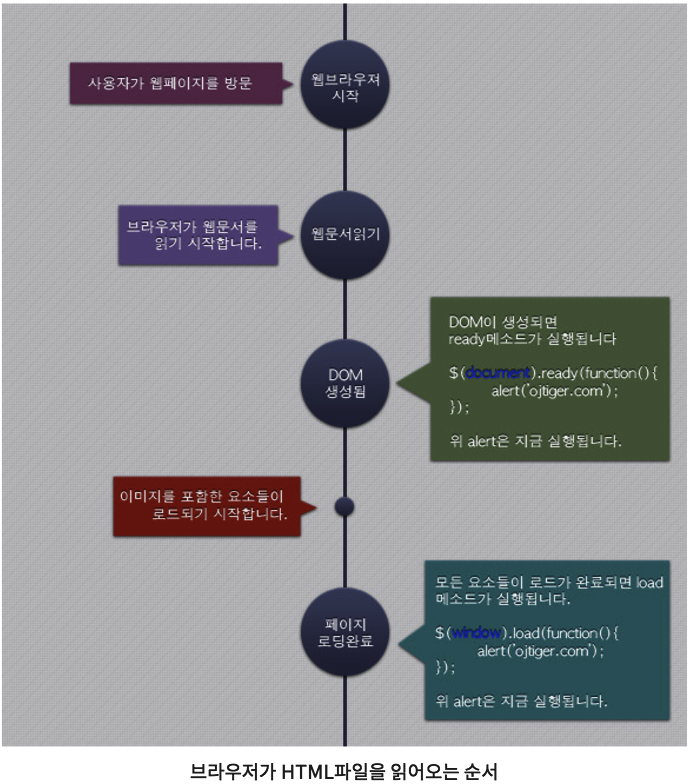

# var, let 그리고 const
var 변수 선언
- function-scope
- 유효범위가 함수 단위
console.log("Before declaration, foo= "+foo); // undefined
var foo = "foo";
console.log("var foo= " + foo); // foo
if(true){
var foo = "foo2";
console.log("In if block, var foo= "+foo); // foo2
}
console.log("After if block, var foo= " +foo); // foo2
let 변수 선언
- Block-scope
- 블록 범위에 국한되고, 블록 내부에서 외부의 lot 변수 참조 불가
//console.log(bar);
//Uncaught ReferenceError: bar is no undefined
let bar = "bar1";
console.log("Afater defitnition and assign, let bar = " + bar); // bar1
if(true){
let bar = "bar2";
console.log("In block, let bar= " + bar); // bar2
}
console.log("After block, let bar = " + bar); // bar1
일시적 사각지대: Temporal Dead Zone
- let선언 변수의 사각지대
- 블록의 외부에서 let으로 선언한 변수와 동일한 이름의 변수를 블록범위 내에서 선언없이 활용할 경우 not defiend 에러 발생.
//let foo = 'foo2'; // 이미 선언되어 있다고 본다. 저 위에 즉, let은 같은 범위에서 동일하게 선언할 수 없다.
let foo2 = 'foo2';
console.log(foo2); // foo1
if(true) {
// console.log(foo2); //foo2 is not defiend
let foo2 = 'foo3'; // 블록 범위가 다르므로 위의 let foo2와 if-블록 let foo2는 다르게 본다.
}
console.log(foo2); // foo2
let과 const
- 참조형이 아닌 단순형의 경우, 값이 변경이 존재할 때 let, 상수 사용일 때 const로 선언
- 참조형(:array, object, function)의 경우 const로 선언하는 것이 바람직
- 참조형의 경우 const로 선언하더라도 멤버 값을 조작하는 것이 가능
//const로 선언한 경우 상수로 동작하므로, const로 선언한 값을 재할당하면 오류가 발생
//const foo = 0;
//foo = 1; // Error: Uncaugt TypeError: Assignment to constant variable
// 참조형(array, object, function)의 경우 const로 선언.
const arr = [0,1,2];
const refArr = arr;
arr.push(2);
refArr[0] = 10;
console.log("Original array, arr = : " + arr);
console.log("Refer array, refArr = : " + refArr);
const obj = {name: "Jung", id:0}
const refObj = obj;
obj.name = "Kim";
refObj.id = 1;
console.log(obj.id);
console.log(refObj.name);
// 참조가 아닌 Copy의 경우. array => [...배열이름] 연산자, object => Object.assign({}, 오브젝트이름) 함수 사용
const obj2 = {name: "Steve", id:0};
const arr2 = [0,1,2,3,4];
const obj2Copied = Object.assign({}, obj2);
const arr2Copied = [...arr2];
obj2.name = "jobs";
arr2Copied.push(100);
console.log("원본: " + obj2.name + " 카피본: " + obj2Copied.name);
console.log("원본: " + arr2 + " 카피본: " + arr2Copied);
결론.
- ES6에서는 var은 지양하고 가급적 let과 const 사용
- 원시형에서 변수는 let, 상수는 const 선언
- 참조는 const 선언
# 프로토타입 기반 프로그래밍
- 객체의 원형인 프로토타입을 이용하여 새로운 객체를 만들어내는 프로그래밍 기법
- 이렇게 만들어진 객체 역시 자기 자신의 프로토타입을 갖는다.
- 새로운 객체의 원형을 이용하면 또 다른 새로운 객체를 만들어 낼 수 있다.
- 이런 구조로 객체를 확장하는 방식을 프로토타입 기반 프로그래밍이라고 한다.
- 객체의 원형인 프로토 타입을 이용한 클로닝(Cloning)과 개게 특성을 확장해 나가는 방식을 통해 새로운 객체 생성
자바스크립트의 프로토타입
'나 자신(객체)의 프로토 타입(객체 원형)은 아버지다.'
- 자바스크립트의 모든 객체는 자신을 생성한 객체원형(아버지)에 대한 숨겨진 연결을 갖는다.
- 자기 자신을 생성하기 위해 사용된 객체 원형(아버지)을 프로토 타입이라고 한다.
function Foo() {};
var foo1 = new Foo();
console.log(foo1);
- 함수객체 Foo는 foo1객체의 프로토 타입
- 함수 Foo()는 foo1객체의 생성자
- __proto__이 foo1객체를 만들기 위한 객체 원형에 대한 숨겨진 연결
자바스크립트의 프로토타입 프로퍼티
Prototype 프로퍼티는 자신을 통해 만들어질 객체들이 원형으로 사용할 객체를 말한다.
- 모든 함수 객체의 Constructor는 prototype이란 프로퍼티를 지니고 있다.
- 즉, 함수객체만이 Prototype프로퍼티를 지닌다.
- 본 함수를 통해 생성된 객체는 Prototype 프로퍼티를 소유하고 있지 않다.
- Prototype 프로퍼티는 객체가 생성될 당시 만들어지는 객체 자신의 원형(아버지역할)이 될 prototype 객체를 가리킨다.
- 자신을 만든 원형(자신의 아버지)이 아닌 자신을 원형(내가 아버지)으로 할 객체들이 사용할 객체를 말한다.
- Prototype object는 default로 empty Object를 가리킨다.
- 상위객체 Prototype object ~ 하위객체 Prototype
function Foo(name) {
this.name = name;
};
var foo1 = new Foo("Younghun");
console.log(foo1.name); // Younghun
console.log(foo1.prototype.name); // Syntax error
Foo.prototype.nation = "Korea";
console.log(Foo.nation); // undefined
console.log(Foo.prototype.nation); // Korea
console.log(foo1.nation); // Korea
- 함수객체 Foo는 Prototype 프로퍼티를 지니고 있다.
- Foo의 Protytpe 프로퍼티는 foo1 객체가 생성될 당시 만들어지는 foo1의 prototype 객체를 가리킨다.
- 객체 foo1은 prototype프로퍼티를 지니고 있지 않으므로 오류 발생
- 함수객체 Foo는 Prototype 프로퍼티를 지니므로 속성 핸들링이 가능하다.
자바스크립트의 프로토타입 체인(Prototype Chain)
Prototype Chain이란 프로토타입을 상속해서 만들어지는 객체들 간의 연관관계를 의미한다.
- 객체의 생성과정에서 모태가 되는 프로토타입과의 연결고리가 이어져 상속관계를 통해 상위 프로토타입으로 연속해서 이어지는 관계
- 이 연결은 __proto__를 따라 올라간다.
- __proto__프로퍼티들 간 이어진 점선을 타고 '올라가다' 보면 최종적으로 Object 객체의 prototype Object에 다다른다.
- 즉, JavaScript의 모든 객체는 Object 객체에서부터 파생되어 나온 자식들이다.
- Prototype chain은 하위 객체가 상위 객체로부터 프로퍼티와 메서드를 상속받는다.
- 하위 객체가 동일한 프로퍼티와 메서드를 재정의하지 않는 이상 상위에서 정의한 내용을 그대로 물려받는다.
-
사실, 하위 객체는 상위 객체의 속성과 메소드를 상속받는 것이 아니라, 그것을 공유 한다.
하위 객체들은 상위 객체의 prototype 객체를 프로토타입으로 하여 만들어졌음에도 불구하고 상위 객체의 프로퍼티를 지니고 있지 않다.
/* 프로토타입 체인에 의한 공유 */
var A = function() {};
var B = new A();
var C = new A();
A.prototype.x = function() {
console.log("Hello");
};
B.x(); // Hello
C.x(); // Hello
A.prototype.x = function() {
console.log("world");
};
B.x(); // world
C.x(); // world
/* 공유와 상속의 구분 */
var A = function() {
this.x = 'hello';
}
A.prototype.y = 'world';
var B = new A();
B.x(); // 상속(상위객체로부터)
B.y(); // 공유(하위객체들끼리 프로토타입 체인을 타고.)
- 프로토타입 체인에 의해 하위객체들에게 공유된 메소드를 prototype 프로퍼티를 통해 재정의하면 내용들이 영향을 미친다.
- A객체가 생성당시 x 혹은 의미있는 프로퍼티에 대한 정의가 포함된 내용을 가지고 있다면 이는 상속된다.
- 상위객체가 지니고 있는 것을 하위객체가 '상속'
- Prototype 객체에 접근하여 변경한 내용들은 하위객체들이 '공유'
자바스크립트 프로토타입 사용 예시
# 예제 1.
var Foo = function(name) {
var self = this;
this.firstName = "Jung ";
this.secondName = name;
this.fullName = function(f) {
return f + self.secondName;
}(this.firstName);
};
Foo.prototype.nation = "Korea";
var foo1 = new Foo("Hyunjung");
var foo2 = new Foo("Younghun");
console.log("nation: " + foo1.nation + " | name: " + foo1.fullName);
console.log("nation: " + foo2.nation + " | name: " + foo2.fullName);
# 예제 2.
var A = function() {
this.x = function() {
console.log('Hello');
};
};
A.x = function() {
console.log('world');
};
var B = new A();
var C = new A();
A.x(); // world
B.x(); // Hello
C.x(); // Hello
A.x=function(){...}으로 A 함수객체의 x함수를 재정의 하더라도 prototype객체를 수정한 것이 아니다.
생성자를 A()로 하여 생성된 객체는 A함수 객체의 prototype 객체를 cloning하여 생성되므로 Hello 출력
# 예제 3.
var A = function() { };
A.x = function() {
console.log("Hello");
};
A.prototype.x = function() {
console.log("world");
};
var B = new A();
var C = new A();
A.x(); // Hello
B.x(); // world
C.x(); // world
A.x=function(){...}으로 A 함수객체의 x함수를 정의하여 Hello 출력
생성자 A()가 지닌 Prototype 프로퍼티에 접근하여 x()를 정의,
이를 cloning하여 생성된 객체 B, C의 x()는 world 출력
# script 태그의 async와 defer 속성
웹 브라우저가 외부 자바스크립트를 불러오는 일반 script태그를 만나게 되면, 우선, 해당 스크립트를 내려받아 해석하고 실행(execute)할 때까지 웹 문서의 HTML 코드 parsing작업을 잠시 뒤로 미룬다. 때문에, 용량이 큰 스크립트 문서를 HTML 해석 초기에 만나게 되면 해당 페이지를 불러오는 속도마저 지체되는 현상을 일으킨다. 이는 결국 전체적 성능을 떨어뜨리는 결과; 병목 현상. 이를 막기 위해 script 태그의 async, defer 속성을 사용한다.
사용 예시
- async 혹은 defer 된 스크립트 문서는 문서 parsing 작업의 중단 없이 동시에 내려받게 된다.
- onload handler를 지정해서 일반적인 초기화 작업도 가능
-
async와 defer의 차이는 스크립트 실행 시점이 다르다.
- async script는 window의 load event 전 내려받는 즉시 바로 실행
- defer script는 문서의 parsing 작업이 끝난 후 DOMContentLoaded event 전에 문서 삽입 순서에 따라 실행
- script가 문서를 직접 만지고 조작하거나 서로 로딩 순서가 중요할 때 : defer
- script가 문서를 직접 만지지 않는 경우 : async
***onload, ready
$(document).ready
DOM이 생성되면 ready method가 실행된다.
window.onload
모든 요소 및 소스들이 로드가 완료되면 실행된다.
# 클로져(Closer)
클로저 기본
클로저는 외부함수의 변수에 접근할 수 있는 내부함수를 일컫는다. 스코프 체인(scope chain)으로 표현되기도 하며 클로져는 세 가지 스코프 체인을 지닌다.
- 클로저 자신에 대한 접근(자신의 블럭 내에 정의된 변수)
- 외부 함수의 변수에 대한 접근
- 전역 변수에 대한 접근
내부함수는 외부함수의 변수 뿐만 아니라, 파라미터에도 접근 가능
var nameIntro = "My name is ";
function showName(firstName, lastName) {
var nameIntro = "Your name is ";
// 내부함수 makeFullname은 외부함수 showName의 변수와 파라메터에 접근 가능.
function makeFullName() {
return nameIntro + firstName + " " + lastName;
}
return makeFullName();
}
console.log(showName("Jung", "Younghun")); //Your name is Jung Younghun
클로저 규칙과 부수 효과
클로저는 외부함수가 리턴된 이후에도 외부함수의 변수에 접근할 수 있다.
외부함수가 리턴된 이후에도 여전히 내부함수가 외부함수의 변수에 접근하고 있다. 자바스크립트의 함수가 실행되었을 때, 함수는 자신이 생성되었을 때와 동일한 스코프 체인을 사용. 그러므로, 내부 함수를 나중에 호출할 수 있다.
function celebrityName(firstName) {
var nameIntro = "This is celebrity is ";
// 내부함수 lastName은 외부함수 celebrityName의 변수와 파라미터에 접근할 수 있다.
function lastName(theLastName) {
return nameIntro + firstName + " " + theLastName;
}
return lastName;
}
var mjName = celebrityName("Jung"); //여기서 외부함수인 celebrityName가 리턴된다..
// 외부함수가 위에서 리턴 된 이후에, 클로져인 lastName이 호출된다.
// 아직, 클로저인 lastName은 외부함수인 celebrityName의 변수와 파라메터에 접근 가능하다.
클로저는 외부 함수의 변수에 대한 참조를 저장한다.
클로저는 실제 값을 저장하는 것이 아니다. 클로저가 호출되기 전에 외부함수의 변수가 변경되었을 때 더 흥미롭다!!!!! 헤헤. 이 강력한 기능은 창의적인 방법으로 활용 가능하다.
function celebrityID() {
var celebrityID = 999;
// 몇개의 내부 함수 getID, setID를 지닌 객체를 리턴할 것이다.
// 모든 내부함수는 외부변수 celebrityID에 접근할 수 있다.
return {
setID: function(theNewID) {
// 이 내부함수는 외부함수의 값을 언제든지 변경.
celebrityID = theNewID;
},
getID: function() {
// setID함수를 통해 갱신된 celebrityID 변수를 리턴
// 이것은 changeThdID 함수가 값을 변경한 이후에도 elebrityID의 현재값을 리턴
return celebrityID;
}
}
}
var mjID = celebrityID(); //이 시점에 celebrityID 외부함수가 리턴된다.
mjID.getID(); // 999
mjID.setID(567); // 외부함수의 변수를 변경한다.
mjID.getID(); // 567; 변경된 celebrityID 변수를 리턴한다.
클로저 비꼬기
클로저가 갱신된 외부 함수의 변수에 접근함으로써, 외부 함수의 변수가 for 문에 의해 변경될 경우 의도치 않은 버그 발생할 수 있다!?
function celebrityIDCreator_ver1(theCelebrities) {
var i;
var uniqueID = 100;
for (i=0; i < theCelebrities.length; i++) {
// 익명함수를 선언만 한 상태(이렇게 하겠다고,,)
theCelebrities[i]["id"] = function() {
console.log(uniqueID + i);
return uniqueID + i;
}
}
// for문을 돌고난 최종 i 값. 즉 3
console.log(i);
return theCelebrities; //아래에서 stalloneID.id()를 통해 익명함수를 실행시킬 때 i는 최종적인 3의 값을 유지하므로,,,103
}
var actionCelebs = [
{ name: "Stallone", id: 0 },
{ name: "Cruise", id: 0 },
{ name: "Willis", id: 0 }
];
var createIdForActionCelebs = celebrityIDCreator_ver1(actionCelebs); // 여기서 이미 i는 3이다.
var stalloneID = createIdForActionCelebs[0]; //0번째 객체를 stalloneID에 담고.
console.log(stalloneID.id()); // 여기서 id를 반환해봤자 i가 3인 상태가 적용된 것이 반환.
"즉시 호출된 함수 표현식" IIFE(Immediately Invoked Function) 사용
클로저가 호출되는 당시 갱신된 최종값을 참조하는 부작용을 고치기 위해 즉시 호출 함수를 사용한다.
function celebrityIDCreator_ver2(theCelebrities) {
var i;
var uniqueID = 100;
for (i=0; i < theCelebrities.length; i++) {
theCelebrities[i]["id"] = function(j) {
// j 파라미터는 호출 시 즉시 넘겨받은 i의 값이 된다.
return function() {
// for 문이 순환할 때 마다 현재 i의 값을 넘겨주고, 배열에 저장.
return uniqueID + j;
}() // 함수의 마지막에 ()을 추가함으로써 함수를 리턴하는 대신 함수를 즉시 실행하고 그 결과값을 리턴.;
}(i) // i 변수를 파라미터로 즉시 함수 호출.;
}
return theCelebrities;
}
var actionCelebs = [
{ name: "Stallone", id: 0 },
{ name: "Cruise", id: 0 },
{ name: "Willis", id: 0 }
];
var createIdForActionCelebs = celebrityIDCreator_ver2(actionCelebs);
var stalloneID = createIdForActionCelebs[0];
var cruiseID = createIdForActionCelebs[1];
console.log("stalloneID: " + stalloneID.id); //100
console.log("cruiseID: " + cruiseID.id); //101